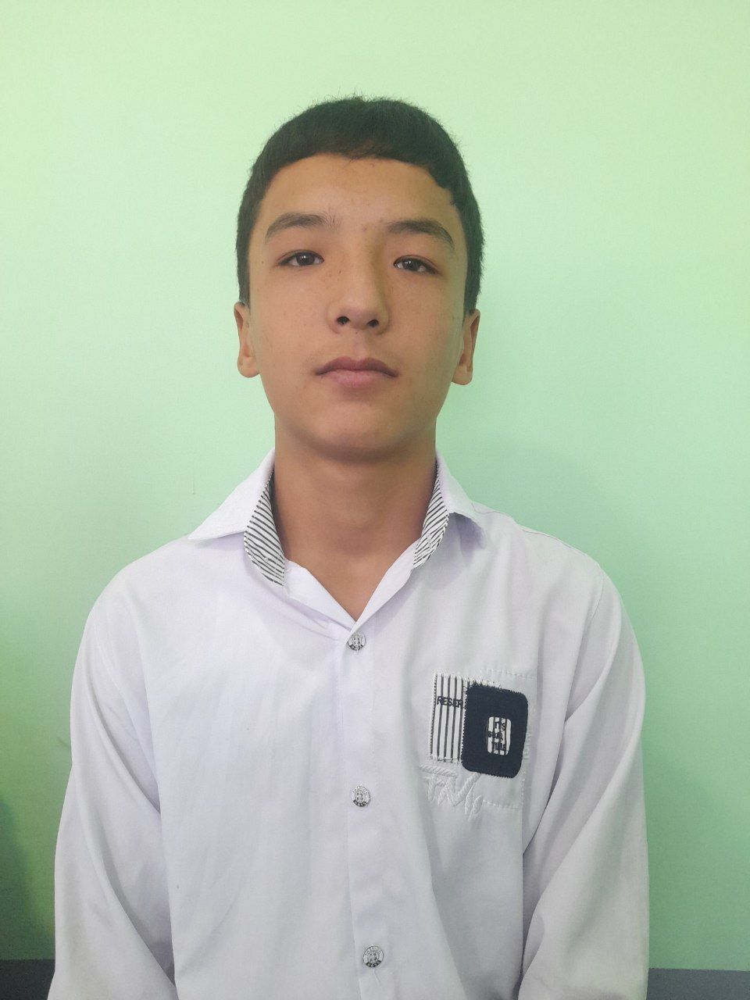
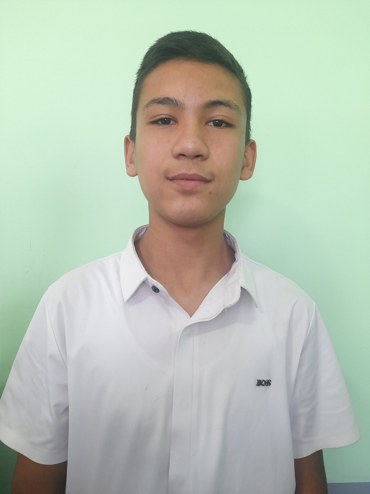
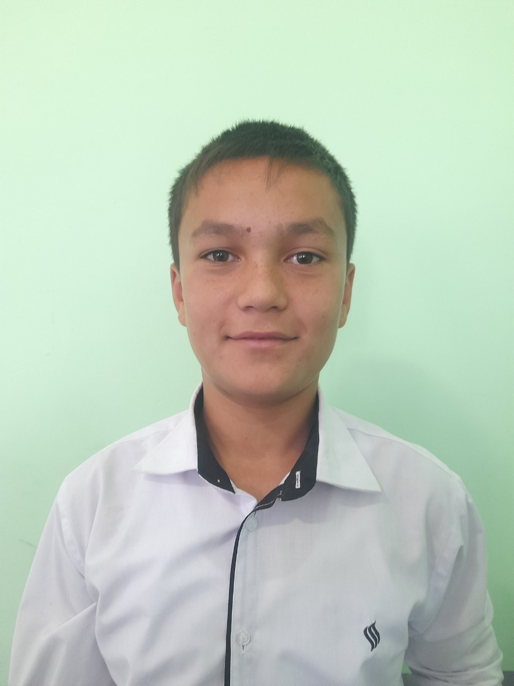
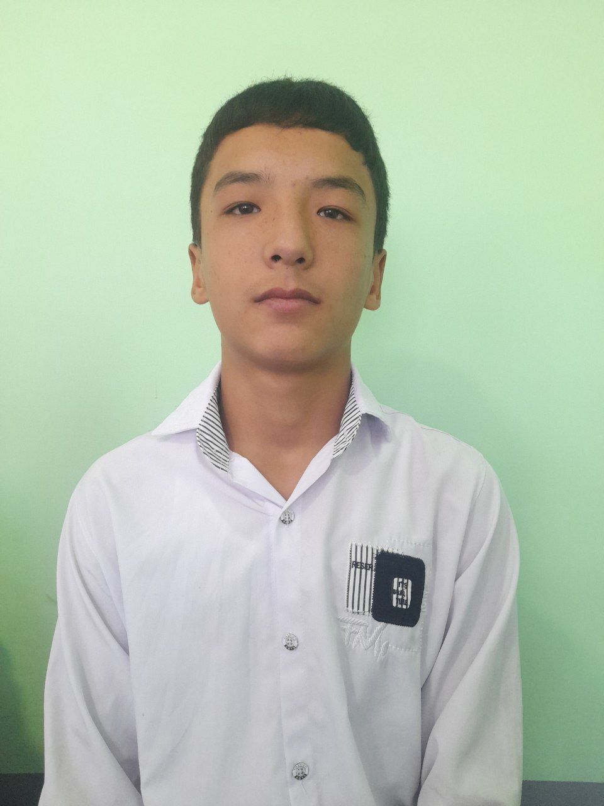
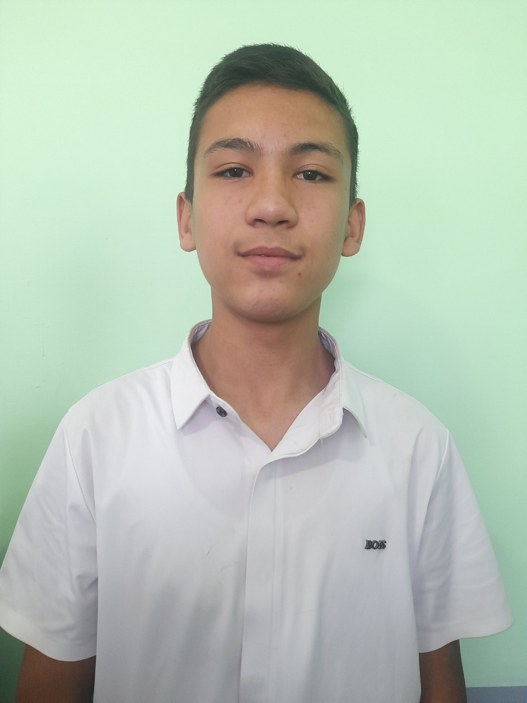
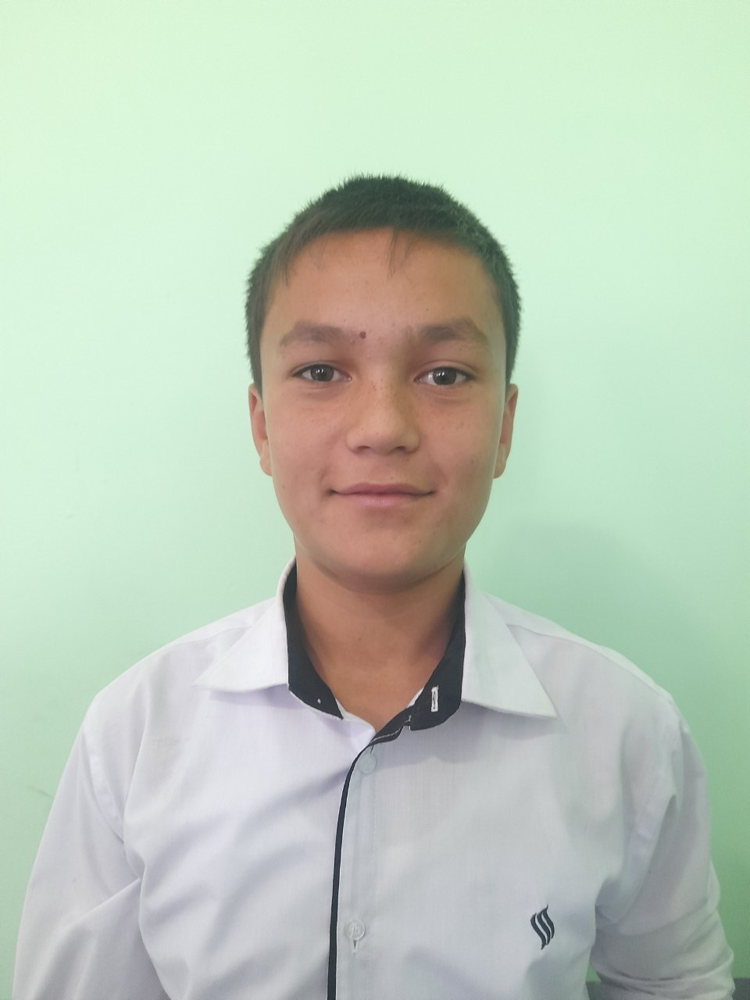

8-A — Bizning eng zoʻr sinf!
Iqtidor, mehr-muhabbat va fantastik gʻayrat — hammasi shu yerdagina.
8-A — Iqtidorli, Doʻstona va Yuksalishga intiluvchilar
Bu sahifa sinfdoshlaringni hayratda qoldirishi, oʻqituvchilar yoqtirishi va maktab festivalida e'tiborni tortishi uchun maxsus tayyorlandi.

Sahifa xususiyatlari: katta banner, slayder, viktorina, bosib chiqarish & yuklab olish, konfetti va fon musiqasi.
Biz haqimizda
8-A — bilimli, ijodkor va jamoaviy ishlarga tayyor sinf. Biz loyihalar, sport va san'atda faol qatnashamiz.
Faol jamoa
Maktab tadbirlari va musobaqalarda doimo faol ishtirok etamiz.
Ijodkor o'quvchilar
San'at, dizayn va loyiha ishlari bizning kuchimiz.
Ilm-fan va gʻoyalar
FAN loyihalari va tajribalar — bizga yoqadi.
Rasm galereyasi


📘 Manaviyat Soati
Jamiyatning maʼnaviy yuksalishi, yoshlarning tarbiyasi va komil inson bo'lib yetishishida ma’naviyatning o‘rni beqiyosdir.
Maʼnaviy merosimiz
Ajdodlarimiz qoldirgan boy madaniy meros — bugungi kun uchun bebaho dars.

Vatanparvarlik
Oʻz yurtini sevish, uni asrash — har bir yoshning eng ulug‘ burchidir.
Maʼrifat va tarbiya
Ilm va maʼrifat insonni ulg‘aytiradi, jamiyatni esa taraqqiyotga eltadi.
🌳 Bizning Daraxt
Sinfimiz o‘sishi va birligi ramzi — daraxt.

⏳ Vaqt Kapsulasi
Kelajakdagi o‘zingga yozgan maktubni saqla.
🏔 Yaxshi Amallar Dovoni
Har bir yaxshi amal – tog‘ sari bir qadam.
🤝 Do‘stlik Halqasi
Bizning sinf birligi va do‘stligimiz timsoli
8-“A” Sinf
 





💡 Motivatsion Burchak
“Ilm — insonning eng kuchli quroli.”
“Bugun qilgan mehnating — ertangi kuningni quradi!”
🛡 Sinf Qonunlari
- 📘 Bir-birini hurmat qilish
- 🕒 Darsga vaqtida kelish
- 🧼 Tozalikni saqlash
- 🤝 Jamoa bo‘lib ishlash
- 📚 Darsda faol bo‘lish
🌍 Dunyo Xaritamiz
Biz qayerlarga sayohat qilmoqchimiz?